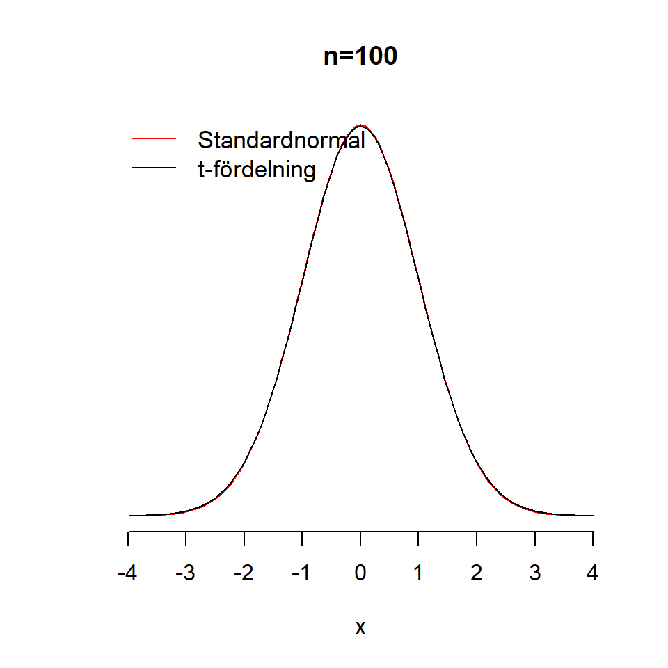

Kapitel 13 Regression med binära utfall
I en multipel linjär regressionsanalys inkorporeras flera oberoende variabel. Beroende på syftet väljer vi olika typer av modeller:
13.1 Regression och lm()
rm(list=ls())
df <- read.csv2("D:/conscriptiondata_sample_final.csv")13.2 Logistisk regression
tableOR <- table(df$testa30, df$testb30)
tableOR
>
> 0 1
> 0 253 36
> 1 52 59
p1 <- mean(df$testa30[df$testb30 == 1])
p0 <- mean(df$testa30[df$testb30 == 0])
OR1 <- (p1/(1-p1))/(p0/(1-p0))
l1 <- glm(testa30 ~ testb30, family = "binomial", data = df)
exp(l1$coefficients)
> (Intercept) testb30
> 0.2055336 7.9738248
l2 <- glm(testa30 ~ testb30 + weight + height, family = "binomial", data = df)
l3 <- glm(testa30 ~ testb30 + psych3_cat, family = "binomial", data = df)
summary(l3)
>
> Call:
> glm(formula = testa30 ~ testb30 + psych3_cat, family = "binomial",
> data = df)
>
> Deviance Residuals:
> Min 1Q Median 3Q Max
> -1.535 -0.639 -0.639 0.993 1.838
>
> Coefficients:
> Estimate Std. Error z value Pr(>|z|)
> (Intercept) -1.1256 0.4893 -2.301 0.0214 *
> testb30 1.9356 0.2638 7.337 2.18e-13 ***
> psych3_catLow (1-2) -16.4404 761.3674 -0.022 0.9828
> psych3_catMedium (3-7) -0.3594 0.4879 -0.737 0.4613
> ---
> Signif. codes: 0 '***' 0.001 '**' 0.01 '*' 0.05 '.' 0.1 ' ' 1
>
> (Dispersion parameter for binomial family taken to be 1)
>
> Null deviance: 472.46 on 399 degrees of freedom
> Residual deviance: 393.48 on 396 degrees of freedom
> AIC: 401.48
>
> Number of Fisher Scoring iterations: 16
anova(l1, l3, test = "Chisq")
> Analysis of Deviance Table
>
> Model 1: testa30 ~ testb30
> Model 2: testa30 ~ testb30 + psych3_cat
> Resid. Df Resid. Dev Df Deviance Pr(>Chi)
> 1 398 404.64
> 2 396 393.48 2 11.158 0.003777 **
> ---
> Signif. codes: 0 '***' 0.001 '**' 0.01 '*' 0.05 '.' 0.1 ' ' 1
str(l1)
> List of 30
> $ coefficients : Named num [1:2] -1.58 2.08
> ..- attr(*, "names")= chr [1:2] "(Intercept)" "testb30"
> $ residuals : Named num [1:400] -2.64 -1.21 5.87 1.61 -1.21 ...
> ..- attr(*, "names")= chr [1:400] "1" "2" "3" "4" ...
> $ fitted.values : Named num [1:400] 0.621 0.17 0.17 0.621 0.17 ...
> ..- attr(*, "names")= chr [1:400] "1" "2" "3" "4" ...
> $ effects : Named num [1:400] 7.068 7.967 2.276 0.823 -0.383 ...
> ..- attr(*, "names")= chr [1:400] "(Intercept)" "testb30" "" "" ...
> $ R : num [1:2, 1:2] -8.09 0 -2.76 3.84
> ..- attr(*, "dimnames")=List of 2
> .. ..$ : chr [1:2] "(Intercept)" "testb30"
> .. ..$ : chr [1:2] "(Intercept)" "testb30"
> $ rank : int 2
> $ qr :List of 5
> ..$ qr : num [1:400, 1:2] -8.0927 0.0465 0.0465 0.0599 0.0465 ...
> .. ..- attr(*, "dimnames")=List of 2
> .. .. ..$ : chr [1:400] "1" "2" "3" "4" ...
> .. .. ..$ : chr [1:2] "(Intercept)" "testb30"
> ..$ rank : int 2
> ..$ qraux: num [1:2] 1.06 1.04
> ..$ pivot: int [1:2] 1 2
> ..$ tol : num 1e-11
> ..- attr(*, "class")= chr "qr"
> $ family :List of 12
> ..$ family : chr "binomial"
> ..$ link : chr "logit"
> ..$ linkfun :function (mu)
> ..$ linkinv :function (eta)
> ..$ variance :function (mu)
> ..$ dev.resids:function (y, mu, wt)
> ..$ aic :function (y, n, mu, wt, dev)
> ..$ mu.eta :function (eta)
> ..$ initialize: expression({ if (NCOL(y) == 1) { if (is.factor(y)) y <- y != levels(y)[1L] n <- rep.int(1, nobs) y[weights =| __truncated__
> ..$ validmu :function (mu)
> ..$ valideta :function (eta)
> ..$ simulate :function (object, nsim)
> ..- attr(*, "class")= chr "family"
> $ linear.predictors: Named num [1:400] 0.494 -1.582 -1.582 0.494 -1.582 ...
> ..- attr(*, "names")= chr [1:400] "1" "2" "3" "4" ...
> $ deviance : num 405
> $ aic : num 409
> $ null.deviance : num 472
> $ iter : int 4
> $ weights : Named num [1:400] 0.235 0.141 0.141 0.235 0.141 ...
> ..- attr(*, "names")= chr [1:400] "1" "2" "3" "4" ...
> $ prior.weights : Named num [1:400] 1 1 1 1 1 1 1 1 1 1 ...
> ..- attr(*, "names")= chr [1:400] "1" "2" "3" "4" ...
> $ df.residual : int 398
> $ df.null : int 399
> $ y : Named num [1:400] 0 0 1 1 0 0 0 0 0 0 ...
> ..- attr(*, "names")= chr [1:400] "1" "2" "3" "4" ...
> $ converged : logi TRUE
> $ boundary : logi FALSE
> $ model :'data.frame': 400 obs. of 2 variables:
> ..$ testa30: int [1:400] 0 0 1 1 0 0 0 0 0 0 ...
> ..$ testb30: int [1:400] 1 0 0 1 0 0 0 0 0 0 ...
> ..- attr(*, "terms")=Classes 'terms', 'formula' language testa30 ~ testb30
> .. .. ..- attr(*, "variables")= language list(testa30, testb30)
> .. .. ..- attr(*, "factors")= int [1:2, 1] 0 1
> .. .. .. ..- attr(*, "dimnames")=List of 2
> .. .. .. .. ..$ : chr [1:2] "testa30" "testb30"
> .. .. .. .. ..$ : chr "testb30"
> .. .. ..- attr(*, "term.labels")= chr "testb30"
> .. .. ..- attr(*, "order")= int 1
> .. .. ..- attr(*, "intercept")= int 1
> .. .. ..- attr(*, "response")= int 1
> .. .. ..- attr(*, ".Environment")=<environment: R_GlobalEnv>
> .. .. ..- attr(*, "predvars")= language list(testa30, testb30)
> .. .. ..- attr(*, "dataClasses")= Named chr [1:2] "numeric" "numeric"
> .. .. .. ..- attr(*, "names")= chr [1:2] "testa30" "testb30"
> $ call : language glm(formula = testa30 ~ testb30, family = "binomial", data = df)
> $ formula :Class 'formula' language testa30 ~ testb30
> .. ..- attr(*, ".Environment")=<environment: R_GlobalEnv>
> $ terms :Classes 'terms', 'formula' language testa30 ~ testb30
> .. ..- attr(*, "variables")= language list(testa30, testb30)
> .. ..- attr(*, "factors")= int [1:2, 1] 0 1
> .. .. ..- attr(*, "dimnames")=List of 2
> .. .. .. ..$ : chr [1:2] "testa30" "testb30"
> .. .. .. ..$ : chr "testb30"
> .. ..- attr(*, "term.labels")= chr "testb30"
> .. ..- attr(*, "order")= int 1
> .. ..- attr(*, "intercept")= int 1
> .. ..- attr(*, "response")= int 1
> .. ..- attr(*, ".Environment")=<environment: R_GlobalEnv>
> .. ..- attr(*, "predvars")= language list(testa30, testb30)
> .. ..- attr(*, "dataClasses")= Named chr [1:2] "numeric" "numeric"
> .. .. ..- attr(*, "names")= chr [1:2] "testa30" "testb30"
> $ data :'data.frame': 400 obs. of 40 variables:
> ..$ X.1 : int [1:400] 1 2 3 4 5 6 7 8 9 10 ...
> ..$ X : int [1:400] 623197 468738 327755 357991 62368 480167 374046 25548 232264 621580 ...
> ..$ id : int [1:400] 623197 468738 327755 357991 62368 480167 374046 25548 232264 621580 ...
> ..$ year : int [1:400] 1974 1970 1967 1968 1962 1970 1968 1961 1965 1973 ...
> ..$ height : int [1:400] 178 160 173 172 176 176 182 179 173 183 ...
> ..$ weight : int [1:400] 84 58 72 65 70 62 56 71 78 99 ...
> ..$ psych : int [1:400] 3 4 7 6 2 6 3 6 4 2 ...
> ..$ muscle : int [1:400] 6 3 9 5 4 8 3 6 9 5 ...
> ..$ armstrength : num [1:400] 429 340 591 403 400 ...
> ..$ physical : int [1:400] 5 6 9 6 7 6 6 7 6 4 ...
> ..$ gripstrength: num [1:400] 631 427 760 582 482 ...
> ..$ legstrength : num [1:400] 635 425 880 559 470 ...
> ..$ sbp : int [1:400] 124 136 123 132 129 131 121 125 140 143 ...
> ..$ dbp : int [1:400] 68 68 56 50 67 81 54 55 49 69 ...
> ..$ officer : int [1:400] 0 NA 9 6 9 NA NA 8 0 NA ...
> ..$ testa : int [1:400] 26 19 33 31 12 27 23 27 25 10 ...
> ..$ testb : int [1:400] 33 19 28 31 10 20 16 20 29 1 ...
> ..$ testc : int [1:400] 12 19 27 32 9 10 18 16 25 3 ...
> ..$ testd : int [1:400] 19 16 30 33 14 17 19 37 26 11 ...
> ..$ year5 : int [1:400] 3 2 2 2 1 2 2 1 1 3 ...
> ..$ year5_cat : Factor w/ 3 levels "1961-1965","1966-1970",..: 3 2 2 2 1 2 2 1 1 3 ...
> ..$ testa4 : int [1:400] 3 2 4 4 2 3 3 3 3 2 ...
> ..$ testa_cat : int [1:400] 3 2 4 4 2 3 3 3 3 2 ...
> ..$ testb4 : int [1:400] 4 2 3 4 2 3 2 3 3 1 ...
> ..$ testc4 : int [1:400] 2 2 3 4 1 2 2 2 3 1 ...
> ..$ testc_cat : int [1:400] 2 2 3 4 1 2 2 2 3 1 ...
> ..$ testd4 : int [1:400] 2 2 4 4 2 2 2 4 3 2 ...
> ..$ testd_cat : int [1:400] 2 2 4 4 2 2 2 4 3 2 ...
> ..$ testa30 : int [1:400] 0 0 1 1 0 0 0 0 0 0 ...
> ..$ testa30_cat : Factor w/ 2 levels "< 30",">= 30": 1 1 2 2 1 1 1 1 1 1 ...
> ..$ testb30 : int [1:400] 1 0 0 1 0 0 0 0 0 0 ...
> ..$ testb30_cat : Factor w/ 2 levels "< 30",">= 30": 2 1 1 2 1 1 1 1 1 1 ...
> ..$ testc30 : int [1:400] 0 0 0 1 0 0 0 0 0 0 ...
> ..$ testc30_cat : Factor w/ 2 levels "< 30",">= 30": 1 1 1 2 1 1 1 1 1 1 ...
> ..$ sbp130 : int [1:400] 0 1 0 1 0 1 0 0 1 1 ...
> ..$ sbphigh : Factor w/ 2 levels "< 130",">= 130": 1 2 1 2 1 2 1 1 2 2 ...
> ..$ dbp80 : int [1:400] 0 0 0 0 0 1 0 0 0 0 ...
> ..$ dbphigh : Factor w/ 2 levels "< 80",">= 80": 1 1 1 1 1 2 1 1 1 1 ...
> ..$ psych3 : int [1:400] 2 2 2 2 1 2 2 2 2 1 ...
> ..$ psych3_cat : Factor w/ 3 levels "High (8-9","Low (1-2)",..: 3 3 3 3 2 3 3 3 3 2 ...
> $ offset : NULL
> $ control :List of 3
> ..$ epsilon: num 1e-08
> ..$ maxit : num 25
> ..$ trace : logi FALSE
> $ method : chr "glm.fit"
> $ contrasts : NULL
> $ xlevels : Named list()
> - attr(*, "class")= chr [1:2] "glm" "lm"
l4 <- glm(testa30 ~ testb + testc + psych + muscle + legstrength + year5_cat, family = "binomial", data = df)
summary(l4)
>
> Call:
> glm(formula = testa30 ~ testb + testc + psych + muscle + legstrength +
> year5_cat, family = "binomial", data = df)
>
> Deviance Residuals:
> Min 1Q Median 3Q Max
> -2.6296 -0.4458 -0.1503 0.2796 2.7570
>
> Coefficients:
> Estimate Std. Error z value Pr(>|z|)
> (Intercept) -11.576291 1.452837 -7.968 1.61e-15 ***
> testb 0.232002 0.038581 6.013 1.82e-09 ***
> testc 0.144527 0.024889 5.807 6.37e-09 ***
> psych 0.168178 0.114450 1.469 0.141712
> muscle -0.729847 0.161244 -4.526 6.00e-06 ***
> legstrength 0.007708 0.002278 3.384 0.000714 ***
> year5_cat1966-1970 -0.325025 0.396617 -0.819 0.412505
> year5_cat1970-1975 -0.609279 0.390392 -1.561 0.118598
> ---
> Signif. codes: 0 '***' 0.001 '**' 0.01 '*' 0.05 '.' 0.1 ' ' 1
>
> (Dispersion parameter for binomial family taken to be 1)
>
> Null deviance: 472.46 on 399 degrees of freedom
> Residual deviance: 254.62 on 392 degrees of freedom
> AIC: 270.62
>
> Number of Fisher Scoring iterations: 6
x <- -4:10
y <- 2 + 3*x + 2*x^2
dydx <- 3 + 4*x
plot(x,y)
x <- 2
y <- 3 + 3*x + 2*x^2
points(x, y, col="red")
x <- 3.5
y <- 3 + 3*x + 2*x^2
points(x,y, col="red")
x <- 1.5
y <- 3 + 3*x + 2*x^2
points(x,y, col="red")
# Anta att vi singlar slant
n <- 80
h <- 49
p <- seq(0,1,0.01)
L <- choose(80, 49)*(p^h*(1-p)^(n-h))
plot( choose(80, 49)*(p^h*(1-p)^(n-h)) )
p[which.max(L)]
> [1] 0.61